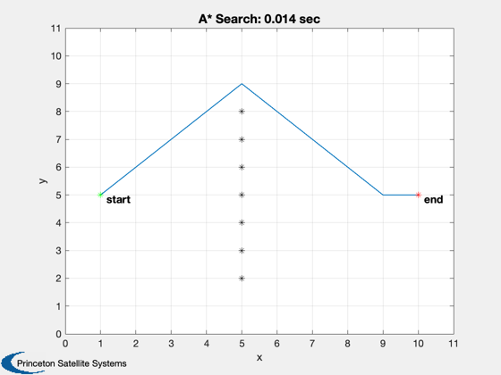
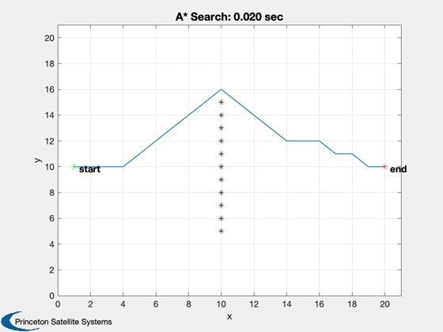
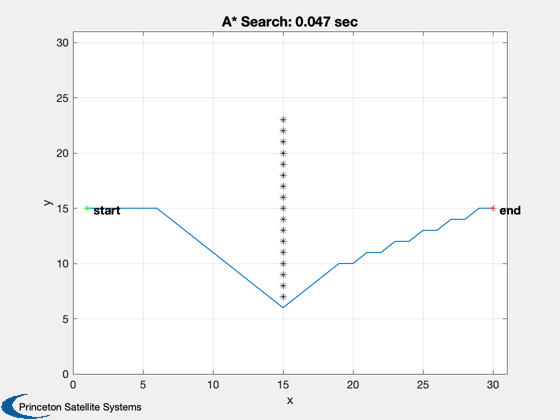
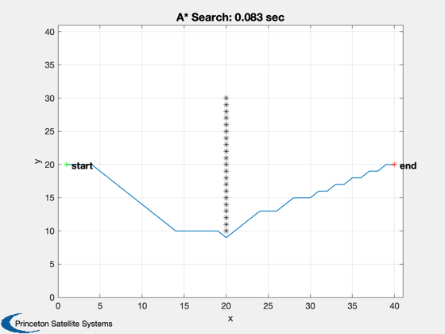
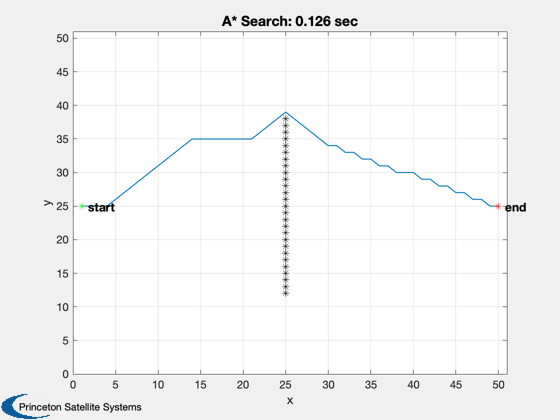
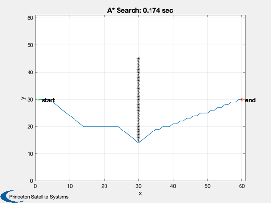
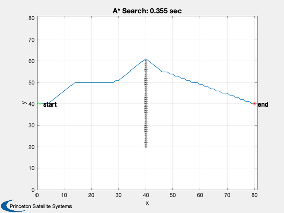
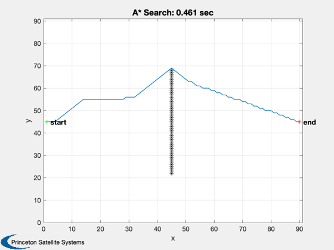
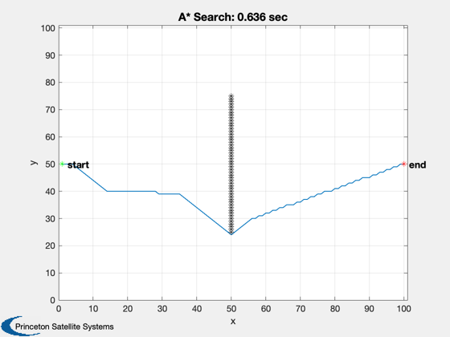
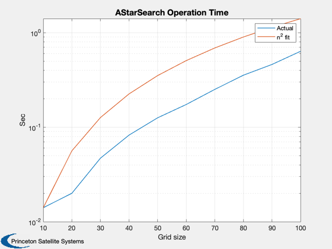

Test AStarSearch using a grid with randomly placed obstacles.
------------------------------------------------------------------------
See also AStarSearch, TransformGridCoordinates, Plot2D, TextS
------------------------------------------------------------------------
d = [];
d.pathCostEstimateFunction = 'GridPathCost';
d.traverseCostFunction = 'GridTraverseCost';
d.successorNodesFunction = 'GridSuccessorNodes';
for m = 1:10
n = m*10;
rowStart = n/2;
rowEnd = n/2;
colStart = 1;
colEnd = n;
rows = -ceil(n/4):ceil(n/4);
blockedNode = [(n/2)*ones(1,length(rows));n/2 + rows];
grid = zeros(n,n);
d.myData.n = n;
for k = 1:size(blockedNode,2)
grid(blockedNode(2,k),blockedNode(1,k)) = 1;
end
for k = 1:n
d.myData.grid(1,((k-1)*n+1):(k*n)) = grid(k,:);
end
d.n = length(d.myData.grid);
startNode = TransformGridCoordinates( rowStart, colStart, n );
endNode = TransformGridCoordinates( rowEnd, colEnd, n );
tic
path = AStarSearch( startNode, endNode, d );
flopsTotal(m) = toc;
t = sprintf('A* Search: %2.3f sec',flopsTotal(m));
[y, x] = TransformGridCoordinates( path, n );
Plot2D( x, y, 'x', 'y', t );
n = n + 1;
set( gca, 'xlim', [0 n], 'ylim', [0 n] )
hold on
[row, col] = TransformGridCoordinates( startNode, n-1 );
TextS(col,row-.15,' start')
plot(col,row,'*g')
[row, col] = TransformGridCoordinates( endNode, n-1 );
TextS(col,row-.15,' end')
plot(col,row,'*r')
for k = 1:size(blockedNode,2)
plot(blockedNode(1,k),blockedNode(2,k),'*k');
end
end
hold off
n = 10*(1:length(flopsTotal));
scale = flopsTotal(1)/n(1)^2;
fit = scale*n.^2;
Plot2D(10*(1:length(flopsTotal)),[flopsTotal;fit],'Grid size','Sec','AStarSearch Operation Time','ylog')
legend('Actual', 'n^2 fit')
     

   